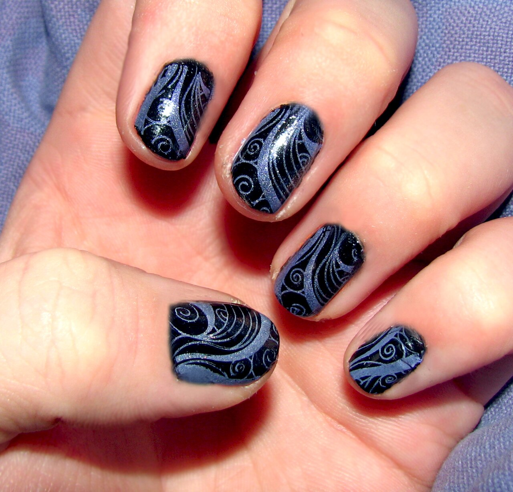

ここに載せている3件は、制作側で作成した例文です。実際のお客様の声ではありません。
口コミ
イメージ例
仕上がった手元を見て、思わず笑顔になりました。ゆっくりお話しできたので、落ち着いた気持ちで過ごせました。

イメージ例
手元を見るたびに、ちょっと嬉しくなります。気になることも聞きやすく、丁寧に対応してもらえた印象です。
02
03
イメージ例
静かな雰囲気で、リラックスして過ごせました。また気分を変えたいときに、立ち寄りたいと思います。
お店の最新情報は
お店の最新情報は、Instagramでご確認ください。